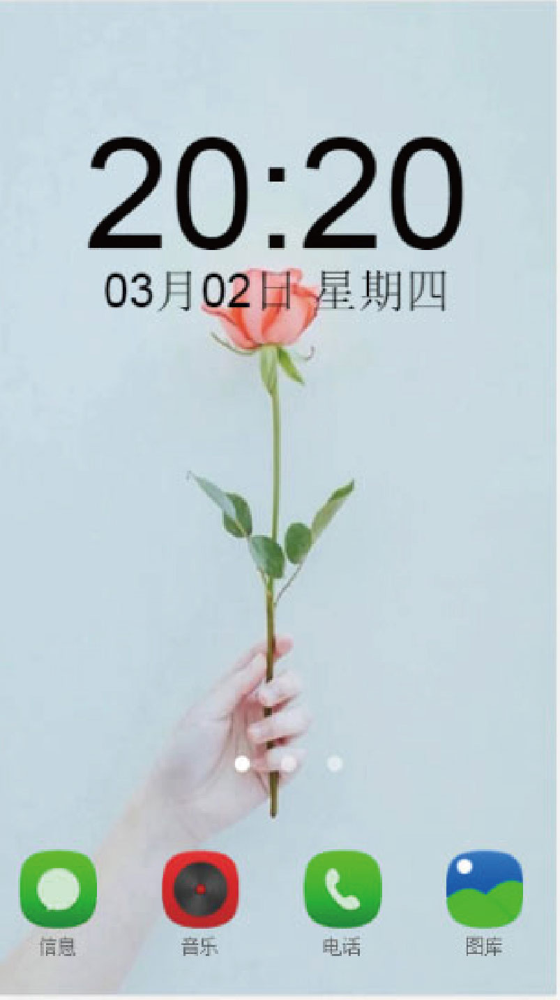
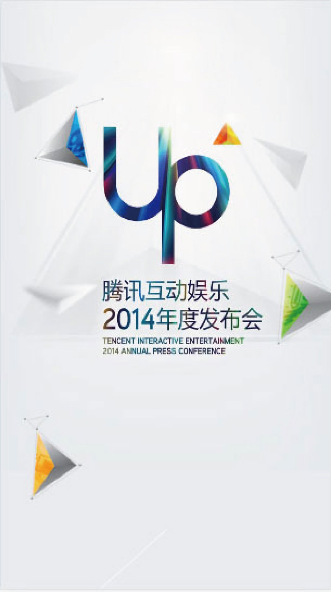
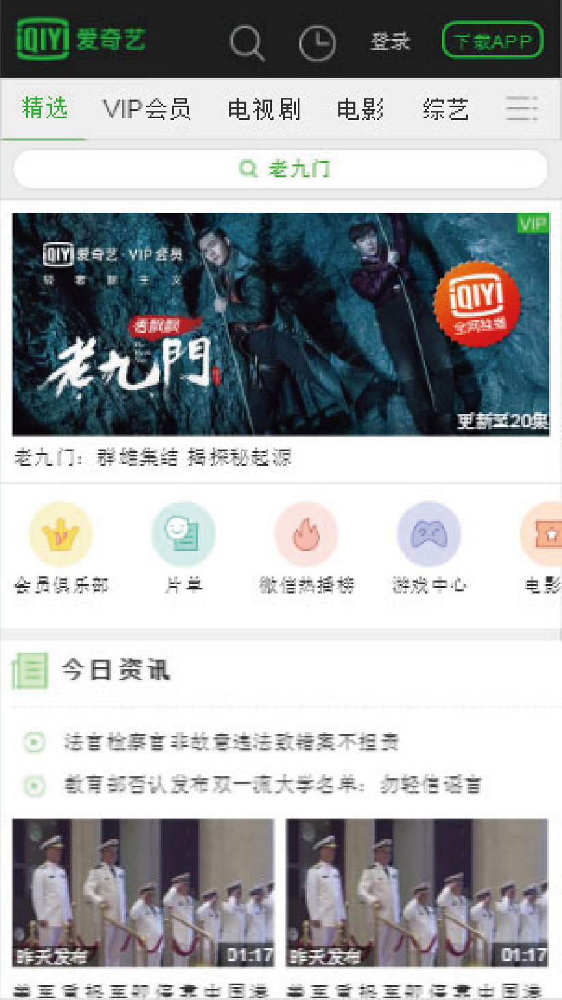

From
韩梦桐
ABOUT ME
专业技能
CSS JS AJAX JQuery1 关于我 About me
- 姓名：韩梦桐
- 性别：女
- 出生年月：1994.5.25
- 毕业院校：西京学院
- 学历：本科
- 毕业时间：2016.7
- 联系电话：13611030115
- 邮箱：719084437@qq.com
- 求职意向：WEB前端开发工程师
- 期望薪资：8k-10k
个人爱好
阅读 骑行 拍照 旅行2 教育/经历 Education Experience
EDUCATION
就读于西京学院
英语专业
担任西京学院人文科学系
学生会组织部部长
EXPERIENCE
河北唯赞商贸有限责任公司
WEB前端工程师一职

DESIGN SAMPLE REELS
作品集- 项目描述：
- 本项目是一个兼容项目，兼容至IE6版本以及当前各主流浏览器。
- 1.使用了h5新增的语义化标签，优化了SEO
- 2.利用transition优化了,hover的动画
- 3.使用了精灵图优化了http请求次数
- ENTER
- 项目描述：
- 本项目是一个响应式项目，根据当前各种设备的主流分辨率，处理了5种不同屏幕适配（320,600,770,960,1160）。
- 1.利用media 在不同分辨率加载不同的样式
- 2.利用css3新增的结构性伪类，减少了选择器的命名
- 3.使用了精灵图优化了http请求次数
- 4.合理的规划布局严格按照从左到右，从上到下，从外向里的页面布局架构
- ENTER
- 项目描述：
- 本项目是一个整站项目，根据不同页面内容，进行简单的交互操作及内容操作。
- 1.利用position的固定定位，做了悬浮按钮的效果
- 2.由于用了css3和html5的内容所有处理了向下的优雅降级,圆角在IE9一下的IE中以直角显示,mask在webkit以外的浏览器，则没有遮罩效果
- ENTER
移动端作品展

- 项目描述：
- 本项目是一个模拟手机桌面的项目，根据不同页面内容，进行简单的交互操作及内容操作。
- 1.运用拖拽和碰撞检测达到移动图标的效果
- 2.利用h5新增的audio标签完成音乐播放器
- 3.利用DOM节点操作生成结构

- 项目描述：
- 本作品是一个移动端项目，利用css添加各种样式，Jquery书写JS部分，另外还有陀螺仪的相关应用。
- 1.利用陀螺仪进行设备的重力检测，使图片随着设备翻转而移动
- 2.添加了地图 API

- 项目描述：
- 本项目是一个爱奇艺客户端的项目。
- 1.利用css3新增的结构性伪类，减少了选择器的命名
- 2.使用了精灵图优化了http请求次数
2017
THANK YOU 期待能与你相遇
韩梦桐
13611030115
719084437
719084437@qq.com